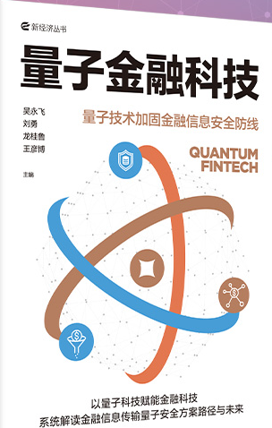

《量子金融科技》· 第三篇 应用篇 ISBN 978-7-5217-8069-7 中图分类号 F830
客户与金融机构之间、客户与客户之间的量子通信应用研究
第十章 · 第一节：张育、李建华、崔周宏 · 第二、三节：张月、杨璇、李悦、王一多
《量子金融科技》，中信出版集团，2025 年 12 月
摘要： 本章将量子通信的应用视角从机构之间延伸至客户与金融机构之间、客户与客户之间。第一节立足商业银行数字信贷业务，分析量子安全直接通信如何满足产业数字金融对核心数据资产安全传输的需求，推动业务模式由工业设备按揭 1.0 向数字信用 3.0 升级；第二节聚焦用户身份认证，梳理商业银行身份认证体系面临的量子威胁，提出基于连续变量量子密钥分发增强的单点登录方案，并在华夏银行完成实证；第三节展望客户间量子加密通道等应用方向。
关键词： 量子安全直接通信；连续变量量子密钥分发；数字信贷；用户身份认证；单点登录
分类号： F830（金融）；TN918（通信保密）
书籍信息
PUBLICATION
- 书名
- 量子金融科技
- 副书名
- 量子技术加固金融信息安全防线
- 主编
- 吴永飞 刘勇 龙桂鲁 王彦博
- 出版社
- 中信出版集团
- 出版时间
- 2025 年 12 月
- ISBN
- 978-7-5217-8069-7
- 定价
- ￥79.00
- 中图分类
- F830
内容提要：本书汇集了我国在量子金融科技领域的理论研究、应用探索与未来展望，系统阐释量子科技演进脉络、金融安全挑战与量子通信创新框架，聚焦离散变量量子密钥分发、连续变量量子密钥分发和量子安全直接通信三大技术，并呈现中国人民银行、华夏银行、徽商银行、兴业银行等单位的应用实践。
全书目录
- 01量子金融科技是新质生产力的典型代表
- 02量子计算发展给金融安全带来全新挑战
- 03金融量子通信创新应用落地方法论
- 04离散变量量子密钥分发技术
- 05连续变量量子密钥分发技术
- 06量子安全直接通信技术
- 07监管机构与监管机构之间、金融机构与监管机构之间的量子通信应用研究
- 08金融机构与金融机构之间的量子通信应用研究
- 09历史与未来之间的量子通信应用研究
- 10客户与金融机构之间、客户与客户之间的量子通信应用研究本章
- 11量子通信与区块链融合
- 12量子隐私计算：量子通信与隐私计算融合
作者简介
AUTHORS| 吴永飞 | |
|---|---|
| 刘 勇 | |
| 龙桂鲁 | |
| 王彦博 |